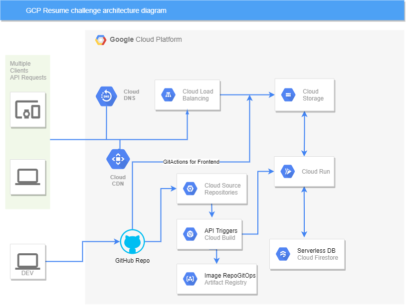

# A Cloud Guru Challenge
29 September 2021
High level of challenge
Hi everyone. First and foremost, why this challenge ? Because while on my journey to switch to back to the technical side,
I stumbled upon this gem where you would dip your toes into so many different tools and technologies and get hands-on experience.
This is certainly not achievable through only certifications and it's a must to get a accustomed and have a cloud fluency.
This is a reccuring challenge by the wonderful people at ACloudGuru(previously AWS,Azure) and this installement in GCP
set up by Mattias Andersson.
You can check it out for more in depth details at: cloudguruchallenge-your-resume-on-gcp
However, for tl;dr, this challenge would have us build our own personal branding site/resume because let's be honest,
a static .pdf certainly wouldn't stand out from the crowd and this is definitely more enjoyable to learn and benefit from it.
This should be a static website, hosted on GCP and include Frontend code, an API that calls a serverless DB, all wrapped up in a CI/CD
pipeline. Also by having a resume on the web, you can customize, update, improve, much faster and it is more interractive.
Architecture
User data flow
This site has been written primarily in HTML, starting from almost a blank sheet, spending way too much time on CSS, and learning
java script on how I can interract with an API. The website has been afterwards stored as a static website on Cloud Storage. Making
sure to change iam permissions for the bucket to be publicly available. Having our backend for our load balancer, we set it up as an
HTTPS LB provided by GCP with a static IP reserved so we can forward it to our previously bought domain. During this phase Cloud DNS
has been used in order to move the name servers from the domain provider and the Cloud CDN was activated for faster delivery of cached
content to users. On each access of the site, a hit counter is incremented through a backend API written in Python and this is value
is sent to the serverless database of choice, which is - Cloud Firestore. There is a caveat here, as this can be incremented only
once every second. There is a posibility to have distributed counters, in order to have it increment multiple iterations, however
due to time constraints, this has not been implemented.
So basically the dataflow is as follows: The static site is served from a backend storage bucket through a secured with SSL LoadBalancer,
with cached content enabled, which serves also a visitor counter.
Dev source code flow
The code has been written locally in VS Code and as a version control, GitHub has been the choice with one repo for Front/Backend and
2 folders to store them. For the frontend part in order to implement a CI/CD pipeline, I've used GitActions in order to automate
the process of deploying and modifications done on frontend. This is triggered only on frontend folder changes and a service account
is used to deploy to Cloud Storage Bucket and invalidate the CDN so the changes don't take 1 hour to take effect. For the backend
the git repo has been mirrored to CSR and I've used the cloud build to build a docker container and store the image in Artifact
Registry. In order to implement a GitOps style approach, a new repo has been made in CSR to track the deployment changes and to
have control over our deployments. In order to have the backend CI/CD pipeline running, 2 cloud build triggers are doing all the work:
1st is building, pushing, commiting the deployment to the candidate branch of environment repo, based on changes in backends folder.
2nd is deploying the latest image built in our Artifact Registry and if succesful, commits the latest deployment to production branch
of environment repo. These ensures a quick, secure, reliable pipeline for our written code.
Next steps / Key Tradeoff
Next steps for the project is to implement a credentials auth for firestore db. As it is now implemented, with default service account,
I did not take in consideration that I have to implement unit testing, therefor even thou I've written a basic unit test, it fails because
it cannot connect to the firestore db, because of credentials. So that is going to be of utmost urgency to change it. I was way too late
in the project to be able to adjust it in order to meet the deadline. I think that that this is the biggest tradeoff that I've made,
having a easy way, no hustle to implement credentials secret keys. Second thing would be to make the site look better for smaller
displays, I have some hardcoded pixels and divs, which do not scale well on smaller screens, also possibility to have my CV downloaded
in the plain .pdf version. 3rd would be to start writting more than one unit test. 4th if the time allows it would be to try to use
Terraform to copy this in a new project. Also as a next step, is to complete my GCP ACE certificate.
Lessons learned
I mean, the whole endeavor was a stepping stone for me, I had to dust off some skills which I haven't used in so long time.
The critical part was for me, that I've started this challenge in 9th of September, and with 1 week of holidays until deadline, and
much of the requirements were complete blur for me. Also in this time I was learning for the GCP ACE certification, but I think that
I've realized that even though I've had moments where I would've wanted to quit because I didn't have time to actually understand what
I needed to do, I kept going. Managed to complete it, and that makes me incredible proud as a personal achievment.
I think that if I would have to redo it, probably it would take much less, probably in 4-5 days it would be completed. As a regret that
I have is the time spent on frontend and the implementation of the API without credentials. As for the whole challenge I strongly
believe that if I would've found it sooner, my time management would have looked much better, without sleepless nights, but then again
it's somewhat minor in the grand scheme of things. Am convinced that this challenge has helped me and others with practical experience
much more than only some certificates.